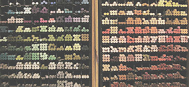

* 2 à 3g d'un élément qui jouera le rôle de liant.
Les recettes les plus courantes suggèrent un mélange de poudre de craie
(en quantité généralement mineure) et de gomme adragante.
On mentionne aussi le glucose, la
gomme arabique et la dextrine
* eau à discrétion : elle s'évaporera. L'important
est d'obtenir une pâte. Éviter absolument les eaux acides qui agiraient
sur la craie. Préférer une eau distillée qui vous épargnera les
impuretés et autres interactions indésirables.
* mélanger les éléments puis rouler la pâte à la main - c'est la meilleure
méthode - ou
couler dans un moule enduit de vaseline.
* laisser sécher 48 heures environ (24 dans une atmosphère favorable,
très
chaude et très sèche, cinq jours en milieu défavorable).
* envelopper le pastel avec du papier à cigarettes si vous le souhaitez et
si sa forme le permet.

[Pastel et couleur]
D'autres recettes font intervenir les terres
blanches. Leur rôle est d'accentuer le caractère couvrant du pastel, mais
elles en modifient la teinte. La concentration en craie peut également présenter
cet inconvénient. Elle accentue la dureté du bâtonnet et diminue sa
friabilité mais en trop forte quantité, elle donne ces fameux tons que l'on
taxe de "couleurs pastel". Un pastel de bonne qualité n'a pas ce
caractère adouci. Il donne des couleurs franches, intenses presque comme le
pigment pur.
Pour en terminer avec l'aspect chromatique, précisons que les fabricants
proposent, outre le pastel à l'unité (photo), différents types de boîtes et
coffrets en fonction de types de travaux à effectuer : paysage, portrait, etc.
[Consistance]
Mais la consistance est peut-être un facteur plus important dans les choix.
La dureté peut être recherchée pour les travaux "gestuels", où
le mouvement est important, mais aussi pour les pastellistes débutants qui ont
parfois beaucoup de mal à manipuler les bâtonnets sans les fragmenter.
Notons l'existence de petits supports qui peuvent présenter des avantages contre
ce danger de rupture lors de la prise en main, mais ne concordent pas avec
toutes les utilisations possibles du pastel.
Les pastellistes plus aguerris préfèrent le plus généralement les pastels
tendres et poudreux, mais ce n'est pas une règle universelle.
[Chimie]
Dans tous les cas, il vaut mieux faire attention aux recettes trop chargées en craie,
terres blanches et autres produits alcalins car les pastels
obtenus peuvent très
mal s'accommoder de supports acides. Ceux-ci sont moins rares que l'on ne le croit.
Canson indique ainsi que les variétés noires de ses papiers pour pastels ('Mi-teintes' ®, Vidalon ®, ...) sont acides.
Toujours concernant la chimie du pastel sec, signalons que les variétés
trop alcalines ne devraient pas être utilisées conjointement à la peinture à
l'huile à cause du risque de saponification.
Brunissement garanti.
Les
pastels aquarellables
Ce sont de très intéressants produits, généralement peu coûteux.
La dilution est opérée de la même manière qu'avec les crayons
aquarellables : avec un pinceau imbibé d'eau, sur le dessin lui-même.
Ces produits sont relativement récents et n'ont donc pas encore eu la
possibilité de faire leurs preuves en matière de tenue à long terme.
Une chose est certaine : pour des esquisses, pour des travaux n'étant pas
destinés à être conservés très durablement, ils sont d'une grande
utilité et ont des capacités très intéressantes. On peut même regretter
la pauvreté de l'offre en France. De plus, les propriétés aquarellables de
certains de ces pastels ne sont pas toujours affichées clairement sur les
boîtes, ce qui est vraiment très dommage. Il y a sans aucun doute un effort à
faire sur le plan de la communication chez certains fabricants.
Le
pastel en poudre, les mélanges
Le pastel mis en poudre (à l'aide de papier de verre) peut être appliqué
notamment avec un coton, une brosse éventail
ou une brosse
à pochoirs. En fait, la mise en poudre, pratique peu répandue, est le seul
moyen de réaliser de véritables mélanges, ce qui explique que les fabricants
proposent d'aussi larges gammes de couleurs (voir photo ci-dessus).
Il existe pourtant des moyens de reconstituer un
bâtonnet à l'aide de
poudre de pastels. On peut par exemple humecter la poudre avec du lait écrémé
(qui contient de l'acide phosphorique - HnPnOn
- comme la caséine) de sorte à constituer une pâte que l'on
roule comme dans le procédé
ci-dessus.
Le
fixatif, compagnon ou ennemi du pastel ?
La question est débattue dans l'article sur les
fixatifs.
Pastels
secs, feutre et talc
Nous avons pu recueillir un témoignage étonnant sur une utilisation peu
commune du pastel. Un graphiste nous a exposé le procédé suivant, utilisé
conjointement à d'autres techniques de dessin dont le feutre :
* Travailler avec du layout fin (un papier
totalement déconseillé pour le pastel)
* Couper la poudre de pastel avec du talc pour donner de l'homogénéité et
pour mieux la fixer à la surface du papier
* Appliquer la poudre avec un coton
* Travailler ensuite avec d'autres techniques comme le feutre.
Le graphiste qui nous a communiqué cet étrange procédé précise que le
résultat ne doit pas être fixé si le feutre est utilisé, la réaction avec l'éthanol
(ou autre produit)
du fixatif risquant de devenir incontrôlable. L'original est scanné puis conservé sans
précautions supplémentaires (en fait, il perd toute importance à partir du
moment où il est scanné).
Retour
début de page